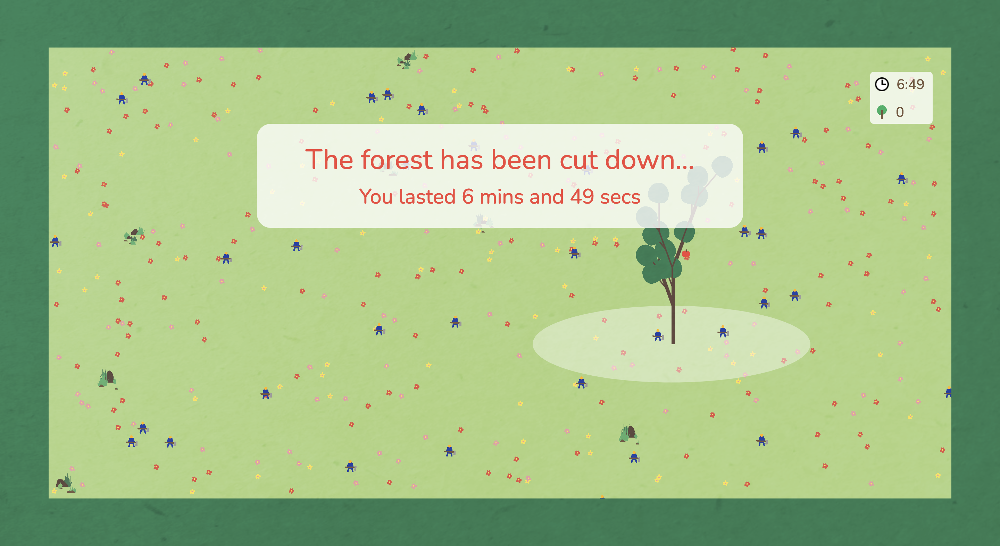

A Forest Clearing is a collaborative multiplayer simulation where you work with others to grow and maintain as large a forest as you can. Players plant trees together in a given area to grow their own forest.
The environment spawns lumberjacks that periodically cut down the trees planted by players. Over time the number and speed of movement of the lumberjacks increases, motivating the players to plant as much as possible in a race against the inevitable end of their forest.
Once all the planted trees have been cut down by the lumberjacks, the simulation ends and the players can see how much time their forest lasted before it was cut down.
This simulation was created in collaboration with Tanvi Mishra and Hyacinth Weng and won the Parsons Annual Game Jam 2022.
The simulation counter-examines the resource gathering practices commonly found in modern games and reverses them, encouraging the values of growing and nurturing trees as opposed to cutting and using them for their own purposes. It also aims to bring awareness towards the reducing forest cover on the Earth as unlike in a game or simulation, cutting down a real tree has very real consequences.
